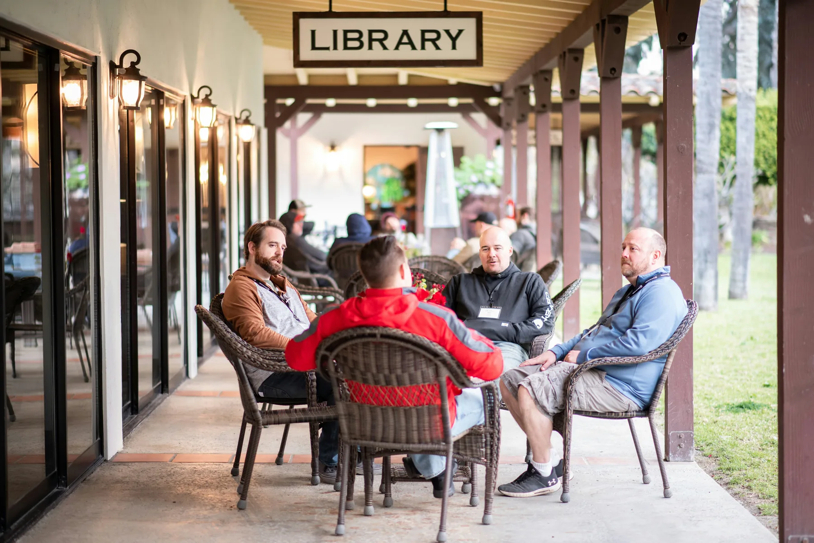
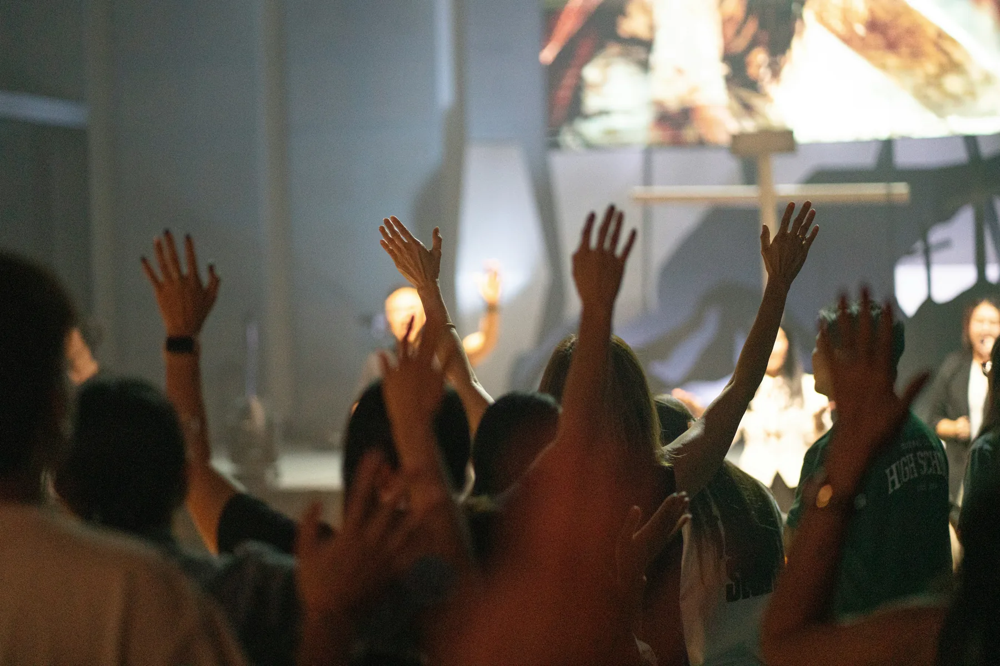
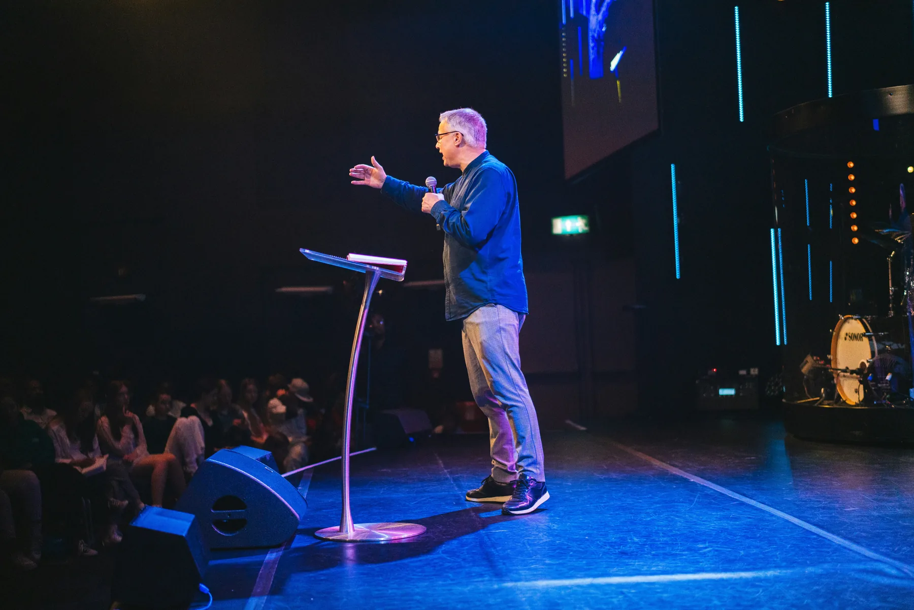

PLANTING THE BAY
Berkeley first. Baywide next.

A Bay Area church-planting movement
Launching in Berkeley on September 1, then expanding across the Bay Area.
A focused first step at Cal, built to grow into a connected movement across San Francisco, the Peninsula, San Jose, the Tri-Valley, and beyond.
See the Vision
A movement with a clear path.
Planting the Bay exists to tell the story, cast the vision, and invite people to give or get involved in a multi-region Bay Area movement.
Ways to partner:
-
Give monthly or one-time
-
Serve, host, or relocate
-
Pray and follow updates
Berkeley First
Begin with campus ministry and a local church in partnership with the SF Bay Fellowship.
Baywide Expansion
Build toward San Francisco, the Peninsula, San Jose, the Tri-Valley, and beyond.
Campus Ministry
Reach students through digital outreach, pop-up services, and campus-focused teams.
Support the Launch
Fuel staff couples, interns, volunteers, and long-term donor engagement.
Why the Bay, why now?
A strategic beginning with a human purpose.
The Bay Area brings together global influence, major campuses, diverse communities, and people searching for meaningful connection.

Support staff, campus ministry, gatherings, outreach, and the first year of the Berkeley launch.


The expansion path
Berkeley first → expand across the Bay.
A simple regional path that begins with campus ministry and a local church in Berkeley, then grows through relationships across the Bay.

Phase 1
Campus ministry and local church planting.
- Starting point
- UC Berkeley / Cal
- Partnership
- SF Bay Fellowship
- Launch window
- September 1
- Next regions
- San Francisco, Peninsula, San Jose, Tri-Valley
Explore the full vision
Take a next step
Ways to join the mission.
Get Involved
01
Give
Help fund staff, campus ministry, gatherings, outreach, and the Year 1 Berkeley launch.
Support the launch ↗ 02Serve
Use your time locally through hospitality, events, practical support, and community outreach.
Volunteer locally ↗ 03Pray
Join the prayer pipeline and receive specific needs as the Berkeley launch moves forward.
Join the prayer list ↗ 04Relocate
Explore joining the plant as a family, intern, volunteer, or staff couple called to the Bay.
Start a conversation ↗
BERKELEY•SAN FRANCISCO•PENINSULA•SAN JOSE•TRI-VALLEY•BAY AREA•
BERKELEY•SAN FRANCISCO•PENINSULA•SAN JOSE•TRI-VALLEY•BAY AREA•
Frequently Asked Questions
Answers for donors, volunteers, and families exploring how to join the Bay Area planting movement.
Where does Planting the Bay begin?
The launch begins in Berkeley in partnership with the SF Bay Fellowship, building both campus ministry and a local church.
What is the Year 1 fundraising goal?
The Year 1 goal is $1,000,000 to support the Berkeley launch, staff, campus ministry, pop-up services, and early expansion.
Can I give monthly?
Yes. Recurring giving is emphasized because stable monthly support helps sustain staff, outreach, events, and long-term growth.
How can I get involved besides giving?
You can serve locally, pray, host or support pop-up services, relocate to the Bay, or explore joining the planting staff.
Is giving tax-deductible?
The initiative is connected to a 501(c)(3) giving structure, with fund designation and receipt details included in the giving process.
Who is leading the initiative?
Stuart and Ashley Mains serve as Lead Evangelist and Planting Coordinators for the Bay Area initiative.
How will updates be shared?
Stories, progress, events, and prayer needs will be shared through email updates, social content, and story pages.
Field notes
Latest updates & stories.
Follow the Berkeley launch, prayer needs, and progress toward a wider Bay Area movement.
View all updates